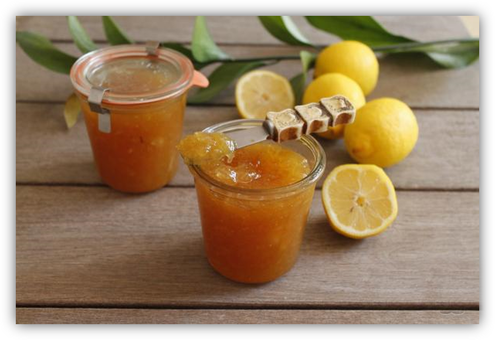

POSTRES
Mermelada Limon

Espectativa
Ingredientes:
- 1 kilogramo de limones
- 650 gramos de azúcar (3¼ tazas)
- 1 pizca de sal
Pasos:
- Vamos a hacer nuestra mermelada de limón tres días antes para intentar quitarle un poco de amargor a los limones. Para ello, lava bien los limones, córtalos por la mitad y retira las semillas para depositarlas sobre una gasa limpia.
- Ata bien la gasa con las semillas, ponla en una taza con agua, cúbrela con papel film y reserva así la taza durante tres días en la nevera para que las semillas suelten la pectina y actúe de espesante para la mermelada casera.
- Parte, a su vez, los medios limones por la mitad, colócalos en una olla cubiertos de agua y déjalos reposar durante tres días. Ve cambiando el agua dos veces al día, una por la mañana y otra por la noche.
- Pasados los tres días, retira la pulpa del limón de la corteza. Como estarán muy blandos, se quitará fácilmente con las manos. Recoge también el zumo que vayan soltando al pelar los limones.
- Coge varias cortezas de limón y ráspalas con un cuchillo para que no queden pieles blancas, que son las que más amargan. Corta la corteza en tiras finas para añadirlas a la mermelada de limón.
- Es muy importante que peses toda la pulpa y el jugo obtenido, puesto que esa será la cantidad de azúcar que necesitarás para hacer la mermelada de limón. Como mi pulpa ha pesado 650 g, es la cantidad de azúcar que he puesto. Así que deposita en una olla la pulpa de limón, el jugo que ha soltado, el azúcar, las pieles en tiras y una pizca de sal. También saca la taza de agua donde tienes reservadas las semilla y añádelas, tanto el agua como las semillas. Cuece a fuego suave durante una hora y cuarto removiendo de vez en cuando. Verás que queda líquida, pero no te preocupéis, conforme se va enfriando se irá espesando.
- Al finalizar, retira las semillas y si ves alguna suelta sácala también. Puedes triturar con la batidora la mermelada, eso lo dejo a tu elección, por si te gusta más con tropezones o menos. Llena los botes elegidos con la mermelada y tápalos bien. Deja que se enfríen y guárdalos en la nevera hasta su consumo. Se conserva en perfecto estado hasta seis meses sin abrir.


Este es un sitio de recetas rápidas que puedes hacer facilmente para una reunión, sorpresa, algo casual o simplemente para ti.